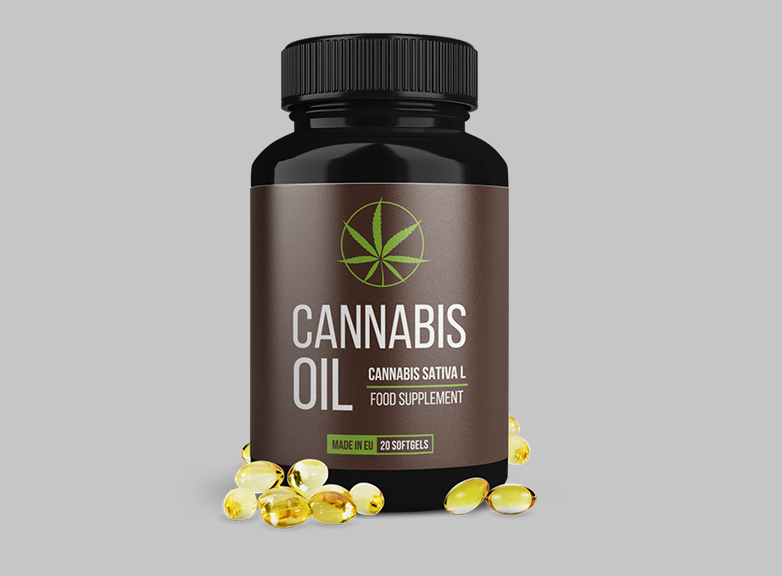

Odkritje švicarskih znanstvenikov je popolnoma spremenilo pristop k zdravljenju hipertenzije. Zdaj se lahko samo v 28 dneh znebite nihanja krvnega tlaka.
Hipertenzija je najnevarnejša bolezen na svetu. Samo v Evropi vsako leto od nje in njenih posledic umre več kot 5 milijonov ljudi! Pred pojavom te bolezni nihče ni zavarovan, pojavlja se pri 98% ljudi, starejših od 50 let, pri enih prej, pri drugih pa kasneje.
Danes je švicarskim znanstvenikom uspelo ugotoviti PRAVE VZROKE hipertenzije in so predlagali edinstven način, kako jih odpraviti. Najboljša stvar te novice je, da vam ni treba jemati dragih kemikalij, da se znebite vzrokov hipertenzije! Hipertenzijo lahko ozdravimo na takšen način, kot so jo zdravili v starih časih. Zdaj ga znanstveniki ponovno uporabljajo. In to je povzročilo resnično revolucijo pri zdravljenju ne le hipertenzije, temveč tudi drugih srčno-žilnih obolenj.
Na ta način se lahko ozdravi bolezni, kot so:
- Ateroskleroza
- Koronarna bolezen srca
- Tromboza
- Tromboflebitis
- Aritmija in angina pektoris
- Šum na srcu
- Hematopoeza (anemija)
- Krčne žile
Na srečanju z novinarji je odkritje švicarskih znanstvenikov komentiral znani zdravnik, specialist kardiolog, profesor Davor Baloh.

Novinar: Do katere mere je nevaren visok krvni tlak?
Davor Baloh: Seveda je visok krvni tlak nevarna patologija. Srce se hitro obrabi, žile postanejo krhke, posledično pa se poveča tveganje za rupturo žil. Razpoka ene od možganskih žil vodi v možgansko kap, če pa poči srčna žila pride do infarkta. Obe bolezni sta smrtonosni.
Poleg tega je visok tlak nevaren, ker lahko krvni strdek v se odtrga od žilne stene in zamaši pretok skozi žilo. To stanje tudi grozi s smrtnimi zapleti.
Visok krvni tlak hitro iztroši celotno telo. Zato hipertenzijo pogosto spremljajo bolezni, kot so:
- Slepota
- Srčno popuščanje
- Ledvična odpoved
- Ateroskleroza
- Bolezni sklepov in hrbtenice
- Impotenca
- Cerebralna ishemija
Seveda je treba se znebiti hipertenzije. In to morate storite čim prej.
Novinar: Zakaj zdravila, ki so na voljo v lekarnah, ne morejo ozdraviti hipertenzije?
Davor Baloh: Večina lekarniških zdravil so hipotenzivna, in njihovo delovanje je usmerjeno le v odpravo simptomov te motnje, torej odpravijo zvišan krvni tlak. Imajo le kratkotrajen učinek. Takoj, ko mine, se tlak spet dvigne. Zato je treba jemati hipotenzivna zdravila celo življenje.
Poleg tega se hitro razvije toleranca do teh zdravil, zato jih je treba nadomestiti z drugimi. Funkcija hipotenzivnih zdravil je zaščititi osebo pred visokim krvnim tlakom, vendar hipertenzije ne zdravijo. Če se želite bolezni popolnoma znebiti, morate uporabljati druga sredstva.
Vprašanje novinarja: v čim je bistvo odkritja švicarskih znanstvenikov glede zdravljenja hipertenzije?
Davor Baloh: Znanstveniki iz švicarskega inštituta za srce in ožilje so ugotovili, da je hipertenzija posledica kontaminacije krvnih žil s posebno vrsto holesterola. Nekoliko spominja na maščobo v hladni vodi, ker tekom življenja se holesterol kopiči na notranjih stenah krvnih žil, in ta obloga postane vedno bolj debela. Zaradi tega se uporabna žilna svetlina zoži. Da bi zagotovili zadostno preskrbo notranjih organov s krvjo, mora srce zvišati krvni tlak. Tako se razvija hipertenzija, povezana s starostjo.

Švicarski znanstveniki so ugotovili, da se lahko holesterolne obloge uničijo s pomočjo večkrat nenasičenih maščobnih kislin, kot so Omega-3, Omega-6, Omega-9. Izvedenih je bilo več kot 120 obsežnih eksperimentov, preden je bilo mogoče vzpostaviti optimalno razmerje le teh za učinkovit boj proti holesterolu. Izkazalo se je, da to razmerje znaša 1: 3: 10. Za to odkritje in delo so bili trije zaposleni v švicarskem inštitutu za srce in ožilje nominirani za Nobelovo nagrado za medicino.
To je zelo pomembno odkritje, saj omogoča ZDRAVLJENJE hipertenzije. Ne znižanje krvnega tlaka, to želim poudariti, ampak zdravljenje hipertenzije. V roku enega meseca ob jemanju omega nenasičenih maščobnih kislin v razmerju 1:3:10 krvni tlak se ne zviša več. Posameznik bo postal svoboden od jemanja hipotenzivnih zdravil, bo okrepil zdravje in si bo podaljšal življenje.
Vprašanje novinarja: Povejte nam, katera zdravila je treba jemati za zdravljenje hipertenzije?
Davor Baloh: Kot je že bilo rečeno, so za čiščenje krvnih žil in zdravljenje hipertenzije potrebne omega nenasičene maščobne kisline v razmerju 1: 3: 10. V takšnem razmerju v naravi jih najdemo le v eni rastlini, in to so SEMENA KONOPLJE. Znanstvenikom je uspelo pridobiti visoko koncentrirano olje iz semen, in omenjene kisline so v njem v pravem razmerju in v zadostni količini za zdravljenje.
Znanstveniki so predlagali prostovoljcem, da jemljejo visoko koncentrirano konopljino olje. Rezultati so osupnili vse! Lahko rečemo, da je človeštvo našlo zdravilo za hipertenzijo!
Želim vam pokazati rezultate švicarskih preiskav. V njih je sodelovalo 2182 prostovoljcev. Vsi so trpeli zaradi hipertenzije in 28 dni so jemali konopljino olje.
Rezultati preiskav
- Krvne žile so bile popolnoma očiščene od holesterola in drugih snovi - 96% poskusnih oseb
- Raven slabega holesterola v krvi se je zmanjšala - 98% poskusnih oseb
- Krvni tlak se je stabiliziral do mej normale - 94% poskusnih oseb
- Glavoboli so izginili - 99% poskusnih oseb
- Vid se je izboljšal - 74% poskusnih oseb
Vprašanje novinarja: Kdaj bo v evropskih lekarnah na voljo visoko koncentrirano konopljino CBD olje v kapsulah?
Davor Baloh: Najverjetneje CANNABIS OIL še ne bo kmalu na voljo v lekarniških verigah. Dejstvo je, da za prodajo v lekarna so potrebne ogromne serije zdravila, konopljino olje pa trenutno se proizvaja v omejenih količinah zaradi pomanjkanja semen konoplje v Evropi. Po najbolj optimističnih prognozah, CANNABIS OIL ne bo na voljo v lekarnah do leta 2022. Ta čas je potreben za organizacijo nakupa surovin v Aziji ali sajenje konoplje v Evropi.
Zdaj (in mislim, da bo minilo še nekaj let) CANNABIS OIL je možno naročiti samo preko uradni spletni strani proizvajalca.
Kar se tiče cene... Trenutno je minimalna, saj se visoko koncentrirano konopljino olje dobavlja direktno od proizvajalca, mimo posrednikov. Zato je ta metoda zdravljenja hipertenzije na voljo vsem. Samo olje lahko jemljete tudi brez posveta z zdravnikom.
Edino, kar je vredno vedeti, je, da se konopljino olje v kapsulah prodaja v omejenih količinah, povpraševanje zanj pa se vsak dan eksponentno povečuje, saj vse več moških izve o njegovih čudovitih lastnostih. Zato bi vsem priporočil, naj oddajo čim prej povpraševanje za olje, ko je še vedno na voljo.
CANNABIS OIL
Pojdite na uradno spletno stran, da naročite CANNABIS OIL
Komentarji
Nataša Bevk
Hvala. Naročila sem konopljino olje. Se bom zdravila z njim. Pritisk se pogosto zviša.
Helena Kovačič
Tudi jaz sem ga naročila.
Miha Erjavec
Jaz pa sem eden tistih, ki so to olje že preizkusili. Imel sem hipertenzijo. In je ni več! Zdaj se počutim povsem zdrav. Tlak se sploh ne dviguje.
Maruša Koren
Hvala za 'Cannabis oil'!! Pritisk mi je nihal, mislila sem, da bom umrla. Navadne tablete niso dosti pomagale. Nato sem zasledila ta članek in naročila olje. Ga jemljem samo en teden dni in pritisk se je že vrnil v normalno stanje.
Damjan Kokalj
Star sem 50 let. 'Cannabis Oil' sem poskusil že lani. Tudi mene je rešilo. Tlak se ne zviša več, zdaj pa sem redno fizično aktiven in poskušam se držati bolj pravilne prehrane! Vsem, ki še niste poskusili, priporočam to olje.
Cvetko Primožič
Podrobnosti o CBD OIL sem prebral na uradni spletni strani. Izjemno je!
Brigita Čeh
Pozdrav vsem! Zdaj sem obiskala spletno stran tega Inštituta za kardiologijo, res malo škatlic je ostalo! Očitno imamo veliko bolnikov s hipertenzijo!
Emin Gregorič
Hipertenzija je res grozna bolezen. Najbolj me je motilo nenehno šumenje v ušesih. To je res nočna mora. Glava me je skozi bolela, pa pritisk včasih je kar skakal. Kolegi so debelo gledali. Pa še zaspan sem bil ves čas. Kapsule konopljinega olja so me rešile.
Iztok Gaber
Konopljino olje je odlično zdravilo proti zvišanemu krvnemu tlaku. Zdravil sem se z njim. Pritisk ni bil več zvišan že po 5 dneh jemanja. Nehal sem jemati tablete. Odlično se počutim.
Metka Pečnik
V časopisu sem prebrala o konopljinem olju za zdravljenje hipertenzije. Pravijo, da je velik napredek v zdravljenju. Je treba preizkusiti.
Niko Lesjak
Včeraj so mi ga dostavili. Uspelo mi je naročiti pravočasno.
Lojze Petrovič
Polovico svojega življenja imel sem zvišan krvni tlak. Po nasvetu zdravnika, ki ga poznam, začel sem jemati visoko koncentrirano konopljino olje. Kot rezultat, že več mesecev pritisk je med 110/70 in 120/80. Le zakaj te rastline prej niso uporabljali za zdravljenje bolezni srca in ožilja! Toliko ljudi je že umrlo.
Mitja Jerman
Hvala. Zanimivo. Oddala sem povpraševanje. Resnično upam, da zdravilo še vedno je na zalogi. Brez njega ne vem, s čim bi se zdravil.
Miro Daneu
Hvala!!!